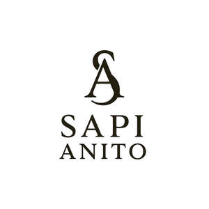

Trade Mark Journal No.2025/034 22 August 2025
UK00004241882 30 July 2025 (3,21,35)

- Class 3
- Creams (Cosmetic -); Cosmetic creams; Cosmetics and cosmetic preparations; Sunscreens [for cosmetic use]; Cosmetic moisturisers; Cosmetic soaps; Sunscreen [for cosmetic use]; Cosmetic facial lotions; Facial lotions [cosmetic]; Cosmetic soap; Lotions for cosmetic purposes; Cosmetic masks; Tonics [cosmetic]; Dyes (Cosmetic -); Cosmetic dyes; Facial creams [cosmetic]; Facial creams [for cosmetic use]; Cosmetic powder; Anti-aging creams [for cosmetic use]; Cosmetic preparations; Facial cleansers [cosmetic]; Cosmetic pencils; Pencils (Cosmetic -); Anti-ageing creams [for cosmetic use]; Kits (Cosmetic -); Cosmetic kits; Facial moisturisers [cosmetic]; Lacquer for cosmetic purposes; Cosmetic skin fresheners; Anti-wrinkle creams [for cosmetic use]; Pro-collagen for cosmetic purposes; Cosmetic creams for the skin; Skin creams [cosmetic]; Skin creams [for cosmetic use]; Henna for cosmetic purposes; Facial cream [for cosmetic use]; Skin cleansers [cosmetic]; Serums for cosmetic purposes; Skin balms [cosmetic]; Cosmetic tanning preparations; Collagen for cosmetic purposes; Cosmetic skin enhancers; Cosmetic hair lotions; Cleansing creams [cosmetic]; Cosmetic rouges; Facial scrubs [cosmetic]; Self-tanning preparations [cosmetic]; Facial toners [cosmetic]; Pomades for cosmetic purposes; Lip coatings [cosmetic]; Suncare lotions [for cosmetic use]; After-sun lotions [for cosmetic use]; Skin cream [for cosmetic use]; Skin whitening preparations [cosmetic]; Anti-ageing serums for cosmetic purposes; Cosmetic creams and lotions; Anti-wrinkle cream [for cosmetic use]; Toning creams [cosmetic]; Adhesives for cosmetic purposes; Cosmetic sun-protecting preparations; Acne cleansers, cosmetic; Cosmetic facial masks; Facial masks [cosmetic]; Astringents for cosmetic purposes; Glitter for cosmetic purposes; Cosmetic sunscreen preparations; Sunscreen creams [for cosmetic use]; Facial washes [cosmetic]; Lip stains for cosmetic purposes; Toners for cosmetic purposes; Geraniol for cosmetic purposes; Cosmetic facial packs; Facial packs [cosmetic]; Skin care lotions [cosmetic]; Cosmetic nail preparations; Cosmetic massage creams; Cosmetic suntan lotions; Eyelashes (Cosmetic preparations for -); Cosmetic preparations for eyelashes; Retinol cream for cosmetic purposes; Cosmetic suntan preparations; Cosmetic hand creams; Skin toners [cosmetic]; Skin hydrators for cosmetic purposes; Cosmetic products for the shower; Skin care creams [cosmetic]; Cosmetic creams for skin care; Procollagen for cosmetic purposes; Pencils for cosmetic purposes; Cosmetic eye gels; Hair care lotions [for cosmetic use]; Hair care creams [for cosmetic use]; Gels for cosmetic purposes; Exfoliating scrubs for cosmetic purposes; Cosmetic sun-tanning preparations; Hair tonics [for cosmetic use]; Tooth powders [for cosmetic use]; Slimming purposes (Cosmetic preparations for -); Cosmetic preparations for slimming purposes; Self tanning creams [cosmetic]; Ointments for cosmetic use; Cosmetic preparations for skin care; Skin care (Cosmetic preparations for -); Cosmetic nourishing creams; Skin conditioning creams for cosmetic purposes; Moisturising gels [cosmetic]; Moisturising skin lotions [cosmetic]; Suntan oils for cosmetic purposes; Self tanning lotions [cosmetic]; Cotton for cosmetic purposes; Softening cleanser [cosmetic]; Moisturising concentrates [cosmetic]; Cosmetic face powders; Essences for cosmetic purposes; Face powders [for cosmetic use]; Lint for cosmetic purposes; Artificial nails for cosmetic purposes; Cosmetic eye pencils; Sun creams [for cosmetic use]; Removable tattoos for cosmetic purposes; Cosmetics.
- Class 21
- Cosmetic brushes; Cosmetic sponges; Cosmetic utensils; Cosmetic spatulas; Cosmetic apparatus for microdermabrasion; Cosmetic powder compacts.
- Class 35
- Online retail store services relating to cosmetic and beauty products.
CEMES GLOBAL LTD
Representative: cemil tura